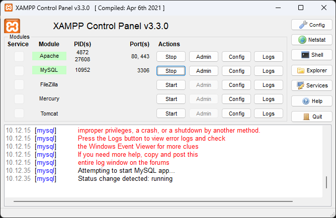
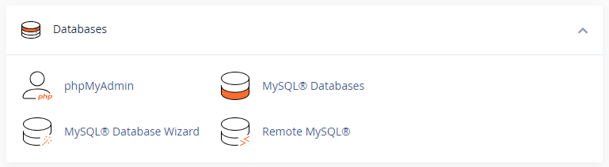
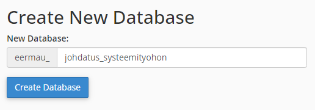
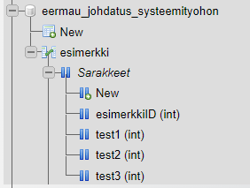

MySQL-tietokanta
XAMPP
XAMPP on sovellus jonka avulla voit ajaa www-palveluja paikallisella koneella. Yleensä kotikansio on c:\xampp\htdocs. Kun käynnistät Apachen ja MySQL-palvelun voit avata phpMyAdmin-tietokantasovelluksen osoitteessa http://localhost/phpmyadmin.

cPanel
cPanel on graafinen käyttöliittymä www-palvelun käyttämiseen. Opiskelijoille on tehty tunnuket treok.io-palvelimelle ja jokaisella opiskelijalla on käytössään MySQL-tietokannat cPanelin alla.
Uusi tietokanta
Tee kurssille aluksi yksi tietokanta (MySQL: Schema).


Avaa Tools / phpMyAdmin ja näet tietokannan sekä sen sisältämät taulut ja taulujen kentät (sarakkeet).